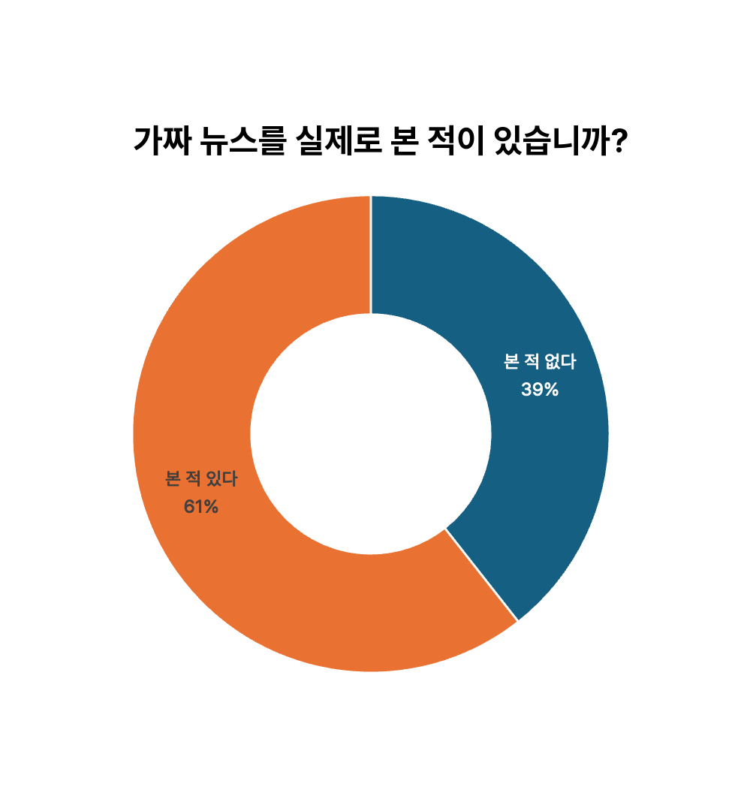

우리는 매일 수많은 뉴스를 접합니다.
스마트폰 알림, SNS 피드, 포털 메인… 그중 얼마나 많은 정보가 진짜일까요?
최근 국내에서 적발된 가짜뉴스 건수는 해마다 기록을 경신하며,
특히 사회적 이슈나 선거철에는 그 피해가 기하급수적으로 늘어나고 있습니다.이제는 생성형 AI까지 뉴스 생산에 적극 도입되면서,
진짜와 가짜를 구분하기가 더욱 어려워졌습니다.
AI의 강점인 빠른 정보 처리와 대량 생성 능력이 오히려 잘못된 정보가 순식간에 확산되는 통로가 될 수 있습니다.
실제로 AI가 만든 기사 중에는 사실관계가 틀리거나, 악의적으로 조작된 사례도 발견되고 있습니다. 지금 이 순간에도 새로운 가짜뉴스가 만들어지고, 공유되고 있습니다. 정보를 접할 때는 반드시 출처를 확인하고, 여러 의견을 비교해보는 습관이 필요합니다.